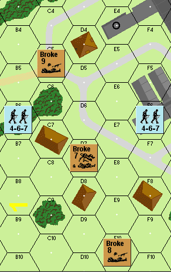
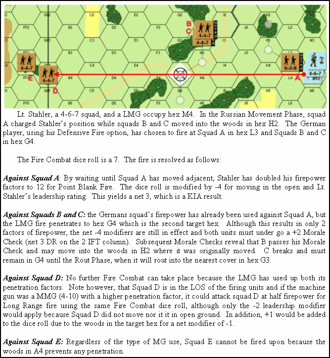
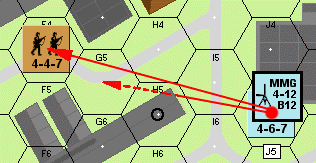
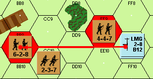

Moral y liderazgo (reglas 12–18)¶
12. MORAL¶
En la mayoría de las batallas, el número de hombres Muertos en Combate (KIA) es bastante pequeño comparado con los que huyeron o buscaron su seguridad personal a costa de la misión asignada. En no poca medida, la moral es el meollo del asunto, pues bajo la superficie de cualquier ejército organizado acecha una masa aterrorizada de hombres que anhelan el hogar y la paz.
12.1 Todas las unidades de escuadra y de Líder tienen una valoración básica de moral impresa en la ficha. Si se saca ese número o menos con dos dados durante un Chequeo de Moral, la unidad supera el Chequeo de Moral.
12.2 Solo dos sucesos, el fuego enemigo o la pérdida de un Líder, pueden obligar a una unidad a realizar un Chequeo de Moral (EXCEPCIÓN: 32.5, 36.11).
12.21 Debe realizarse un Chequeo de Moral inmediato sobre cada unidad de un hex objetivo que acabe de recibir un resultado "M" o "#" en la Tabla de Fuego de Infantería. Los Líderes se chequean primero.
►12.22 Cualquier Líder (estuviera o no previamente desmoralizado) que falle su Chequeo de Moral, o que sea matado/gravemente herido por un francotirador (96.4), provoca que todas las demás unidades apiladas con él en el hex sufran un segundo Chequeo de Moral. Esto ocurre inmediatamente después del chequeo de combate y es un Chequeo "M" normal, independientemente de la fuerza del Chequeo de Moral que desmoralizó al Líder. Ningún modificador de dados, salvo el de un Líder adicional no desmoralizado en el mismo hex, afectaría a estos Chequeos de Moral.
12.3 Las unidades que superan su Chequeo de Moral resultan indemnes. Las que fallan un Chequeo de Moral se invierten de inmediato y se clasifican como unidades desmoralizadas. Una unidad desmoralizada que falle su Chequeo de Moral es retirada del juego.
►12.4 Un Líder no puede aplicar su valoración de liderazgo a su propio Chequeo de Moral; es decir, un Líder 8-1 debe sacar un 8 o menos para superar un Chequeo de Moral "M".
Ejemplo: Dos escuadras rusas 4-4-7 y un Líder con moral 8 y valoración de liderazgo -1 ocupan el mismo hex objetivo. Un Grupo de Fuego ha disparado sobre el hex obteniendo un Chequeo de Moral +1 en la Tabla de Fuego de Infantería. El oficial necesita una tirada de moral de 7 o menos, porque su valoración de moral se ha reducido, en efecto, por el Chequeo de Moral +1. El oficial saca un 4 y supera su Chequeo de Moral. Las dos escuadras ahora también necesitan tiradas de moral de 7 o menos, ya que el Chequeo de Moral +1 y el liderazgo del oficial se cancelan mutuamente. Las tiradas son 6 y 11. Una escuadra "se desmoraliza" y se invierte. Ahora un segundo Grupo de Fuego dispara sobre el mismo hex objetivo y logra un resultado "M" en la Tabla de Fuego de Infantería. El oficial necesita un 8 o menos para superar el Chequeo de Moral, pero saca un 9 y se desmoraliza. Ambas escuadras del hex objetivo deben someterse ahora a dos Chequeos de Moral "M" normales. Necesitan 7 o menos para superar el Chequeo de Moral. La escuadra desmoralizada saca un 7 y un 3 y sobrevive, aunque sigue siendo una unidad desmoralizada. La otra escuadra no tiene tanta suerte y saca un "8" y un "9". La primera tirada "desmoraliza" a la escuadra y la segunda la elimina. (Véase 13.6).
13. UNIDADES DESMORALIZADAS (BROKEN UNITS)¶
13.1 Las unidades desmoralizadas se invierten y no pueden disparar a unidades enemigas ni participar en ningún tipo de combate.
13.2 Una unidad desmoralizada no puede permanecer adyacente a una unidad enemiga. Las unidades desmoralizadas que se encuentren adyacentes a una unidad enemiga (aunque esta también esté desmoralizada) deben alejarse en la siguiente Fase de Huida; huyendo primero las unidades desmoralizadas del jugador en turno.
13.3 [véase GIA 142.5] Las unidades desmoralizadas tienen los mismos FM que tenían en su estado normal, no desmoralizado. Una escuadra desmoralizada apilada con un Líder (esté este desmoralizado o no) durante toda la Fase de Huida en cuestión tiene 6 FM; de lo contrario, tiene 4 FM.
►13.4 Las unidades desmoralizadas buscan automáticamente cubierto en edificios o bosques. Si una unidad desmoralizada no está en dicho cubierto, o está adyacente a una unidad enemiga al comienzo de una Fase de Huida, debe moverse inmediatamente (huir) hacia dicho cubierto a la máxima velocidad, respetando las siguientes restricciones:
►13.41 Una unidad en huida no puede moverse hacia posiciones enemigas conocidas. Nunca puede avanzar hacia una unidad enemiga de manera que disminuya el alcance en hexes entre la unidad desmoralizada y la enemiga.
►13.42 Una unidad en huida no puede cruzar un hex de terreno abierto (salvo que esté tras un muro o seto) que esté tanto en la LDV como en el alcance normal de cualquier unidad enemiga no desmoralizada. NOTAS: Los trigales y los cráteres de obús no son terreno abierto. Las unidades desmoralizadas pueden permanecer en dichos hexes hasta que exista una posible ruta hacia un hex de bosque o edificio, pero deben buscar mejor cubierto en las Fases de Huida siguientes si ello es posible.
13.43 Siempre que se cumplan las dos condiciones anteriores, una unidad en huida tomará la ruta más corta (medida en FM) hacia un cubierto adecuado.
►13.44 Al alcanzar un hex de bosque o edificio, una unidad en huida debe detenerse y no realizar más movimiento hasta ser reorganizada, o hasta que una unidad enemiga se mueva adyacente a ella. Si posteriormente recibe fuego, la unidad desmoralizada puede (pero no está obligada a) huir de nuevo en la siguiente Fase de Huida.
13.45 Una unidad desmoralizada que no alcance un hex de bosque o edificio al final de la primera Fase de Huida debe continuar huyendo en la siguiente Fase de Huida hasta que alcance un hex de bosque o edificio.
13.46 Las unidades desmoralizadas que ya estén en un hex de edificio o bosque pueden optar por quedarse en el hex objetivo en lugar de huir hacia otro cubierto, salvo que el hex objetivo sea adyacente a una unidad enemiga. No obstante, una vez tomada esta decisión, la unidad desmoralizada no puede moverse hasta ser Reorganizada (14.1), recibir fuego, o hasta que una unidad enemiga termine su movimiento adyacente a ella.
13.47 Cualquier unidad desmoralizada incapaz de cumplir los requisitos anteriores queda eliminada.
13.5 Las unidades desmoralizadas abandonan todas las armas de apoyo que pudieran estar transportando antes de huir. Las MG abandonadas están sujetas a captura y uso tanto por las fuerzas enemigas como por las amigas. Otras armas de apoyo se eliminan si son capturadas por fuerzas enemigas (EXCEPCIONES: 41.2, 50.4).
13.6 Las unidades desmoralizadas, si se les exige realizar otro Chequeo de Moral, no sufren penalización inherente alguna por el simple hecho de estar desmoralizadas. Chequearían con el número impreso en su reverso (cara desmoralizada). No obstante, si fallan este Chequeo de Moral, desmoralizándose de nuevo, quedan eliminadas.
13.7 Las unidades pueden "desmoralizarse" voluntariamente en cualquier momento anunciando su intención de hacerlo.
Ejemplo: La unidad desmoralizada "A" queda eliminada porque está rodeada de terreno abierto (13.42) en la LDV de la unidad enemiga en F6. Observa que el hex F9 es un "hex ciego" y podría haber dado a la unidad desmoralizada una ruta hacia el cubierto, de no ser porque tal movimiento disminuiría el alcance entre la unidad desmoralizada y la enemiga de 4 hexes a 3 (13.41). La unidad desmoralizada "B" puede huir hacia el edificio de D4, aunque pueda parecer que avanza sobre la posición enemiga de F6. Un examen más detenido revela que se trata de un movimiento legal, ya que el alcance permanece constante en 3 hexes. La unidad desmoralizada "C" tiene una sola opción: huir a D8.

14. REORGANIZACIÓN DE UNIDADES DESMORALIZADAS (RALLYING)¶
14.1 Las escuadras desmoralizadas de AMBOS bandos pueden intentar REORGANIZARSE durante la Fase de Reorganización de cualquier turno de jugador, si hay presente una ficha de Líder amigo no desmoralizado en el mismo hex.
14.2 Para reorganizarse, una escuadra desmoralizada debe sacar su número de moral o menos con dos dados. Cualquier modificador de liderazgo del Líder no desmoralizado presente en el mismo hex se añadiría a la tirada de dados. Recuerda que añadir un modificador negativo a una tirada de dados en realidad resta del total de la tirada.
14.3 Un Líder desmoralizado puede intentar "autorreorganizarse". Los Líderes desmoralizados no necesitan la presencia de un Líder no desmoralizado para intentar reorganizarse, pero su propio modificador de liderazgo no se aplica a su intento de reorganización.
14.4 Si el único Líder apilado con escuadras desmoralizadas está él mismo desmoralizado, las escuadras no pueden intentar reorganizarse a menos que el Líder logre primero reorganizarse a sí mismo. El Líder reorganizado podría entonces intentar reorganizar cualquier unidad desmoralizada del hex durante el mismo turno de jugador.
14.5 Si hay presente más de un Líder en un apilamiento de unidades desmoralizadas, solo uno tiene que estar no desmoralizado para intentar reorganizar a los demás. Además, cualquier modificador de liderazgo del Líder en buen orden afectaría también a la tirada de dados de reorganización del Líder desmoralizado.
14.6 Cualquier unidad que intente reorganizarse y que haya recibido fuego de 1 o más factores de potencia de fuego desde la Fase de Reorganización precedente (independientemente del efecto de ese ataque) debe sacar "Moral de Desesperación" (Desperation Morale) para reorganizarse durante ese turno de jugador. La Moral de Desesperación es "4" menos que la moral normal. Por tanto, una unidad con moral normal 9 tendría una "Moral de Desesperación" de "5". Cualquier modificador de liderazgo en vigor se añadiría a la tirada de dados. Los jugadores a quienes les cueste recordar qué unidades desmoralizadas han recibido fuego desde la Fase de Reorganización precedente pueden indicarlo colocando un marcador "DM" encima de las unidades que recibieron fuego. Retira todos los marcadores "DM" al final de cada Fase de Reorganización.
14.7 No hay penalización para las unidades que intentan Reorganizarse y fallan (EXCEPCIÓN: 18.3 y 111.93). A partir de ese momento, se tratan como una unidad desmoralizada.
15. LIDERAZGO¶
El liderazgo de las escuadras es la clave del éxito en el campo de batalla de la infantería. Una unidad muy inferior en número puede a menudo neutralizar a una fuerza superior si sus cuadros de combate son superiores. El Líder de la escuadra es la punta de lanza de un grupo de combate y las siguientes reglas reflejan su papel fundamental.
15.1 Todas las unidades de Líder tienen un valor de liderazgo que puede afectar al rendimiento de una Escuadra. Estos valores se expresan normalmente como un número negativo, o simplemente 0 indicando que no hay cambio en la tirada de dados. Existe incluso un Líder con el dudoso valor de liderazgo de +1 que añade un perjuicio de +1 al rendimiento en la tirada de dados de cualquier unidad con la que esté apilado. En todos los casos, las unidades de Líder deben estar apiladas en el mismo hex que una Escuadra para influir en su rendimiento.
15.2 El valor de liderazgo puede usarse para modificar la tirada de dados del Combate de Fuego de un único Grupo de Fuego por turno de jugador, siempre que todas las unidades que disparan del Grupo de Fuego estén en el mismo hex que el Líder y que el Líder no se mueva en la Fase de Movimiento tras haber proporcionado dicho beneficio en la Fase de Fuego Preparado.
15.3 Los valores de liderazgo no modifican las tiradas de dados de ciertas armas de apoyo. Estas armas se identifican mediante el símbolo (∆) en las distintas tablas de combate.
15.4 Dos Líderes no pueden combinar sus valores de liderazgo para obtener un modificador de Combate de Fuego mayor. No más de un Líder puede dirigir el fuego de un mismo Grupo de Fuego.
15.5 Si un Líder se desmoraliza o es eliminado, deja de proporcionar de inmediato cualquier beneficio de moral o de dirección de fuego.
15.6 El modificador del valor de liderazgo de un Líder se aplica a todos los Chequeos de Moral realizados por las unidades en el mismo hex, salvo al propio Líder.
15.7 Igual que en la dirección de fuego, los modificadores de liderazgo para los Chequeos de Moral y los Intentos de reorganización no son acumulativos; es decir, los modificadores de 2 o más Líderes en el mismo hex no pueden sumarse para obtener un único modificador combinado para los Chequeos de Moral o los Intentos de reorganización. El jugador propietario puede elegir qué modificador de liderazgo aplicar cuando hay 2 Líderes presentes en el mismo hex.
15.8 Cualquier unidad de Líder apilada con una unidad desmoralizada al comienzo de la Fase de Huida puede optar por moverse con la unidad desmoralizada mientras esta huye hacia cobertura. Si decide hacerlo, la unidad de Líder debe permanecer con la(s) unidad(es) en huida durante toda la Fase. El Líder no desmoralizado podría llegar a transportar hasta 3 puntos de porte de armas de apoyo. No se permite ningún otro movimiento de unidades no desmoralizadas durante la Fase de Huida.
16. PRINCIPIOS DEL FUEGO DEFENSIVO¶
16.1 El jugador defensor debe vigilar atentamente al jugador en movimiento durante su Fase de Movimiento. A medida que el jugador en movimiento desplaza sus unidades a través de la LDV de las unidades defensoras, el jugador defensor debe anotar por qué hexes se mueve el atacante a través de los cuales sus unidades podrían disparar. Al final de la Fase de Movimiento, el jugador defensor puede devolver cualquier unidad enemiga que acabe de moverse a través de un hex en la LDV de una de sus unidades a cualquier hex objetivo que dicha unidad haya atravesado durante la Fase de Movimiento recién completada. Los límites de apilamiento se ignoran temporalmente. Puede colocarse de inmediato un marcador de «rastro» («track») en aquellos hexes atravesados por el atacante dentro de la LDV del defensor, como recordatorio para ambos jugadores de que el atacante realmente se movió a través de ese hex. (Ver 19.3)
16.2 El jugador defensor puede ahora disparar con todas sus unidades a cualquier hex objetivo dentro de la LDV de cada unidad que dispara. El Combate de Fuego se resuelve de la manera habitual, afectando los resultados a todas las unidades del hex objetivo, se hayan movido o no durante la Fase de Movimiento recién completada.
►16.3 Una vez resuelto cada fuego defensivo, aquellas unidades que el defensor devolvió a un hex objetivo y que no han sido desmoralizadas ni eliminadas se vuelven a colocar en las posiciones que ocupaban antes del inicio de la Fase de Fuego Defensivo, o se mueven al siguiente hex objetivo a lo largo de su línea de marcha que atravesaron en la Fase de Movimiento anterior, para cualquier fuego defensivo adicional por parte de otras unidades defensoras que aún no hayan disparado durante la Fase de Fuego Defensivo.
►16.4 El fuego defensivo contra unidades en movimiento debe realizarse en un hex objetivo en el que la unidad objetivo gastó FM o MP, y no, en la mayoría de los casos, en el hex desde el que la unidad inicia su Fase de Movimiento. El fuego defensivo puede realizarse contra cualquier unidad en LDV que no se mueva.
16.5 Los Grupos de Fuego en la Fase de Fuego Defensivo obtienen un modificador especial de –2 a su tirada de dados del Combate de Fuego contra todas las unidades que se movieron por un hex objetivo de terreno abierto durante la Fase de Movimiento recién completada. El modificador no se aplica a otras unidades que pudieran estar en el hex y que no se movieron.
16.6 En una situación en la que coexisten unidades que se movieron y que no se movieron en el hex objetivo, el Combate de Fuego se resuelve igualmente con una única tirada de dados, pero el modificador de –2 por movimiento en terreno abierto se aplica únicamente a las unidades que realmente se movieron.
Ejemplo: La tirada de dados del Combate de Fuego es un 7. Las unidades que se movieron sufrirían las consecuencias de una tirada de «5», mientras que las que estaban en el hex objetivo antes de la Fase de Movimiento serían atacadas con una tirada de «7».
►16.7 El Fuego defensivo contra vehículos de cualquier tipo se realiza de inmediato, en lugar de al final de la Fase de Movimiento. El fuego contra vehículos en movimiento debe resolverse antes de que el vehículo abandone el hex objetivo previsto. El jugador en movimiento debe dar al defensor amplia oportunidad de declarar su fuego antes de seguir avanzando, anunciando los Puntos de Movimiento gastados en cada hex a medida que avanza. El defensor nunca puede devolver un vehículo a un hex objetivo. Por supuesto, un vehículo que termina su movimiento en la LDV de una unidad enemiga siempre puede recibir fuego más tarde durante la Fase de Fuego Defensivo. En la sección 17 se ofrece un ejemplo de Fuego defensivo, y en las reglas Opcionales se proporciona un sistema alternativo.

Ejemplo (fuego defensivo y penetración de ametralladora). El teniente Stahler, una escuadra 4-6-7 y una LMG ocupan el hex M4. En la Fase de Movimiento rusa, la escuadra A cargó contra la posición de Stahler mientras las escuadras B y C entraban en el bosque del hex H2. El jugador alemán, usando su opción de Fuego Defensivo, ha decidido disparar contra la Escuadra A (hex L3) y contra las Escuadras B y C (hex G4).
La tirada del Combate de Fuego es un 7. El fuego se resuelve así:
Contra la Escuadra A: al esperar a que la Escuadra A se moviera adyacente, Stahler ha doblado sus factores de potencia de fuego a 12 por Fuego a Quemarropa. La tirada se modifica en −4 (por moverse en campo abierto y por el modificador de liderazgo del Tte. Stahler). Esto da un 3 neto, que es un resultado KIA.
Contra las Escuadras B y C: la potencia de fuego de la escuadra alemana ya se ha usado contra la Escuadra A, pero el fuego de la LMG penetra hasta el hex G4, que es el segundo hex objetivo. Aunque esto solo aporta 2 factores de potencia de fuego, los modificadores netos de −4 siguen en vigor y ambas unidades deben superar un Chequeo de Moral con +2 (3 neto en la columna 2 de la TFI). Chequeos posteriores revelan que B supera el suyo y puede entrar en el bosque de H2 (donde se movió originalmente); C falla (rompe) y debe permanecer en G4 hasta la Fase de Huida, en la que huirá hacia la cobertura más cercana, el hex G3.
Contra la Escuadra D: no puede haber más Combate de Fuego porque la LMG ya ha agotado sus dos factores de penetración. Nótese, sin embargo, que la Escuadra D está en la LDV de las unidades que disparan: si la ametralladora fuera una MMG (4-10), con mayor factor de penetración, podría atacar a la Escuadra D a mitad de potencia por Fuego a Largo Alcance usando la misma tirada, aunque solo se aplicaría el modificador de liderazgo −2 (la Escuadra D ni se movió ni está en campo abierto). Además se sumaría +1 por el bosque del hex objetivo, para un modificador neto de −1.
Contra la Escuadra E: sea cual sea el tipo de uso de la MG, no se puede disparar contra la Escuadra E porque el bosque en A4 impide toda penetración.
17. AMETRALLADORAS¶
17.1 Una Escuadra puede disparar cualquier MG o dos LMG sin coste alguno para su propia potencia de fuego.
17.2 Una Escuadra puede disparar cualquier combinación de dos MG con el efecto normal de potencia de fuego de MG por encima de 4 factores, pero al hacerlo renuncia a su propia potencia de fuego inherente durante ese turno.
►17.3 Un Líder puede disparar cualquier MG a la mitad de su factor de potencia de fuego. Dos Líderes pueden disparar cualquier MG a su factor de potencia de fuego completo.
Los Líderes no pueden aplicar su modificador de liderazgo a la tirada «PARA MATAR» («TO KILL») de las MG empleadas bajo su dirección contra VBC. Un Líder que maneje una MG en solitario no tendría ningún efecto contra un VBC.
17.4 Cuando un Líder maneja una MG, renuncia a cualquier modificador de liderazgo que pudiera estar ejerciendo sobre otras unidades que disparan en el mismo hex. No obstante, el modificador de liderazgo sí afecta a su propio fuego, siempre que dicho fuego no se sume al de otras unidades en una única tirada de dados.
►17.5 Ten en cuenta que las MG tienen un factor de penetración que les permite disparar a esa cantidad de hexes objetivo con la misma tirada de dados y potencia de fuego, empleando una única resolución de Combate de Fuego. Cada hex objetivo debe estar a lo largo de la misma LDV de un hex objetivo enemigo designado. Un hex objetivo se define como cualquier hex que contenga una unidad enemiga que esté siendo atacada por Combate de Fuego de al menos 1 factor de potencia de fuego. Ten en cuenta que una MG solo necesita trazar una LDV al centro de un único hex objetivo. Todos los demás hexes cruzados por esa LDV están sujetos a la misma tirada de dados de combate de fuego, siempre que la MG pudiera trazar una LDV despejada e independiente al centro de ese hex si estuviera disparando únicamente contra ese hex.
Ejemplo: La MMG alemana está disparando contra la unidad del hex objetivo F4. Ten en cuenta que el factor de penetración y la LDV de la MMG le permitirían atacar también los hexes I5, H4 y E4 si hubiera unidades enemigas en ellos. El fuego es ineficaz en G5 porque no puede trazar una LDV independiente al centro de ese hex si estuviera disparando únicamente contra él. El fuego también sería ineficaz contra H5 porque es un hex de edificio y, aunque la LDV no cruza realmente el símbolo del edificio, las unidades en H5, si reciben fuego, obtienen el modificador de +3 del edificio. Si la MG afectara a las unidades en H5, el edificio, por definición, detendría toda penetración, eliminando F4 como hex objetivo previsto.
17.6 Las Ametralladoras, al igual que el fuego normal de infantería (7.2), pueden disparar a través de unidades amigas hacia un hex objetivo sin afectar a dichas unidades amigas. No obstante, una vez que la potencia de fuego de la MG se emplea contra un hex objetivo, todos los demás hexes situados más allá de ese hex objetivo a lo largo de esa LDV quedan sujetos a la misma tirada de dados de ataque empleada contra el hex objetivo inicial, estén ocupados por fuerzas amigas o enemigas.
Ejemplo: Usando el ejemplo de 17.5, la MG alemana podría disparar a través de hipotéticas escuadras alemanas en H4 e I5 sin afectarlas. No obstante, tras disparar sobre el enemigo en F4, E4, si estuviera ocupado, pasaría a ser el siguiente hex objetivo y sería atacado con la misma tirada de dados empleada contra F4, aunque los modificadores a la tirada cambiarían el resultado final.
17.7 En los casos en que una LDV se traza exactamente a lo largo de un lado de hex, el fuego pasa a través de uno de los hexes adyacentes (a elección del que dispara) y cualquier unidad en su interior queda sujeta al fuego como un único hex objetivo. El fuego de penetración posterior a lo largo del mismo lado de hex debe penetrar todos los hexes ocupados en el mismo lado del lado de hex a lo largo del cual se traza la LDV.
►17.8 Cualquier unidad no desmoralizada puede destruir armas de apoyo sin coste alguno para sus propias capacidades de fuego o movimiento durante cualquier fase de su propio turno de jugador, siempre que termine la Fase en el mismo hex que dicha arma y no esté trabada en combate cuerpo a cuerpo (20).
17.9 Las MG, al igual que la infantería y otras armas de apoyo de infantería, pueden disparar en cualquier dirección sin perjuicio debido a la orientación de la ficha (EXCEPCIÓN: Cañones AT, 48.7).
Ejemplo: Si la LMG dispara a través del hex EE9 contra el objetivo BB9, no puede disparar al hex CC10. El alcance es de 4 hexes y la LMG ha empleado sus dos factores de penetración en los hexes sombreados en rojo.


18. FORTUNA¶
Sucesos imprevistos a menudo inclinan la balanza del combate. Ya sea un proyectil sin explotar, una mina olvidada, un francotirador bien escondido, o cualquiera de la miríada de factores infinitesimales de la guerra, no se puede negar el papel de la fortuna en cualquier conflicto. Las siguientes reglas intentan recoger en pequeña medida este efecto.
►18.1 AVERÍA (BREAKDOWN): Siempre que se disparan armas de apoyo existe la posibilidad de que se averíen, se sobrecalienten o simplemente se queden sin munición. Cada vez que se obtiene su número de Avería o uno mayor (antes de aplicar modificadores) durante un ataque en el que disparan, dichas armas se averían y se voltean. El fuego de esas armas se resuelve, pero no se permite ningún disparo posterior con las fichas de arma de apoyo hasta que se reparen en una Fase de reorganización y se vuelvan a poner del derecho. El número de Avería de un arma de apoyo figura en la propia ficha tras la letra «B». La Avería afecta simultáneamente a todas las armas de apoyo que disparan en un Grupo de Fuego y refleja la probabilidad de que todas esas armas se queden sin munición al mismo tiempo.
►18.2 Para reparar un arma de apoyo, tira un dado al comienzo de cada Fase de reorganización. Una tirada de 1 repara la ficha. Una tirada de 6 la retira permanentemente del juego. Cualquier otra tirada no produce cambio alguno durante ese turno de jugador. Para intentar reparar un arma de apoyo, esta debe estar en el mismo hex que una ficha de Escuadra o Líder no desmoralizada que no se encuentre en melé (trabada en combate cuerpo a cuerpo) al comienzo de la Fase de reorganización. Ningún bando puede reparar un arma de apoyo capturada que esté desmoralizada.
18.3 REGLAS ESPECIALES DE MORAL: Cualquier unidad de infantería que intente reorganizarse y obtenga un 12 sin ajustar ha sufrido bajas adicionales inexplicables y queda eliminada. Además, si un Líder desmoralizado obtiene un «12» al intentar reorganizarse, todas las demás unidades amigas en el mismo hex deben someterse de inmediato a un Chequeo de Moral normal (12.1).
►18.4 Si, al realizar un Chequeo de Moral para una unidad de infantería rusa (incluso si ya está desmoralizada) debido a fuego enemigo, se obtiene un «2» (antes de aplicar modificadores), la unidad entra en estado Berserk con las siguientes consecuencias «heroicas»:
►18.41 La unidad Berserk es inmune a todos los Chequeos de Moral durante el resto del escenario. Debe ser eliminada para ser detenida. Sustitúyela por una ficha roja del mismo tipo para que pueda distinguirse fácilmente.
►18.42 Una unidad Berserk debe cargar contra la unidad enemiga más cercana (en hexes, no en FM) que esté en su LDV durante su Fase de Movimiento y Avance, en un intento de destruirla en combate cuerpo a cuerpo. La unidad que carga debe tomar la ruta más corta (en FM) hasta la unidad enemiga. Puede disparar durante la Fase de Fuego Defensivo y la Fase de Fuego de Avance, pero no durante la Fase de Fuego Preparado.
►18.43 A una unidad Berserk se le otorgan 6 FM si es una Escuadra y 8 FM si es un Líder. Una Escuadra Berserk puede moverse 8 FM si está apilada con un Líder Berserk durante toda la Fase de Movimiento. Las unidades Berserk no pueden transportar armas de apoyo si al hacerlo se redujera el número de FM de que disponen para moverse.
18.5 Si una unidad de Líder entra en estado Berserk, existe la posibilidad de que todas las unidades no desmoralizadas apiladas con él en el hex objetivo se unan a su estado Berserk. Para volverse Berserk deben obtener un resultado igual o inferior a la Moral Desesperada (14.6), teniendo en cuenta cualquier modificador de liderazgo del Líder Berserk. No hay penalización si fallan este Chequeo de Moral Desesperada.